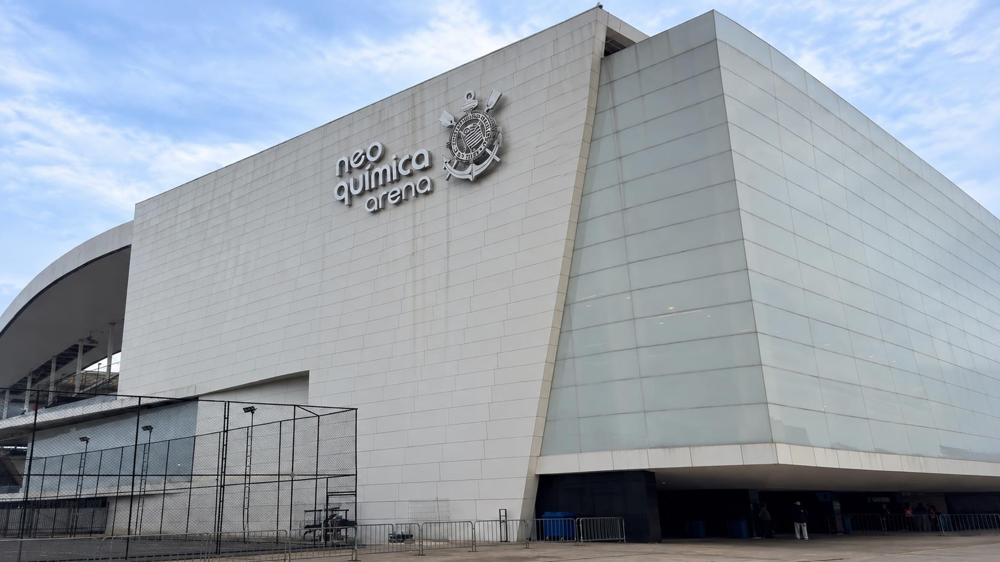

Corinthians
Corinthians aciona a Justiça com pedido de tutela cautelar para renegociar dívidas de R$ 2,8 bilhões
18/11/2026 às 04:56 (horário de Brasília)

O Sport Club Corinthians Paulista ingressou na Justiça de São Paulo com um pedido de tutela cautelar de urgência, fundamentado no artigo 20-B da Lei de Recuperação e Falências. O objetivo da medida é suspender cobranças judiciais, penhoras e bloqueios de contas por até 60 dias para viabilizar negociações prévias com credores antes de um eventual pedido de recuperação judicial. A instituição acumula um passivo estimado em cerca de R$ 2,8 bilhões.
A representação jurídica foi protocolada pelo advogado Elias Mubarak, do escritório Mubarak Advogados. Segundo o clube, a decisão decorreu de uma avaliação técnica, financeira e jurídica após o agravamento do cenário fiscal e seus reflexos no funcionamento cotidiano. A iniciativa foi acelerada pelo risco iminente de colapso do Regime Centralizado de Execuções (RCE), que organiza R$ 200 milhões em débitos cíveis e trabalhistas, após expirar o prazo legal para regularizar o atraso de aproximadamente R$ 10 milhões em parcelas.
Além de salários do elenco profissional e comissão técnica em atraso e três meses pendentes de direitos de imagem, o clube lida com risco de intervenção judicial em meio a tratativas de Termo de Ajustamento de Conduta (TAC) com o Ministério Público estadual. A diretoria corinthiana também requereu a nomeação de um administrador judicial independente para acompanhar a mediação e dar transparência ao processo até a posse da nova administração em 2027.